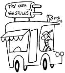

When my husband was discharged from the army and went back to college, it wasn't long before we realized that his part-time job and VA benefits wouldn't be enough to handle our financial requirements. I wanted and needed to go to work but hated the thought of leaving our two daughters (a three-year-old and an eight-month old) with someone else. So I decided to work at home by becoming a day-care provider.
I ran a small ad in the local paper, not forgetting to mention my maternal experience. The response was terrific! With more and more families in our area feeling the need for a second income and many adults returning to school, the daycare business was (and still is) booming. After a few days of running the ad, I had made agreements with several families to take care of their children.
After I'd been running my business for a short while, a friend told me that all daycare homes and providers had to be registered with the state. I picked up the regis tration forms at our county health department. The forms outlined standards for children's health, discipline, and welfare. In addition, there was a form for compliance with fire and safety regulations (each home must have a fire extinguisher, a smoke detector, and two groundlevel exits). Two months after I sent my forms to the state health department, I received a certificate of registration in the mail.
Once I became registered, the health department informed me that I was eligible for federal money through the Federal Child Care Food Program. Now, each month I fill out menus for the children's meals and turn them in to the administering agency. The government then sends me a check to buy food for those meals.
In short, for a $30 investment in a fire extinguisher, a smoke detector, and a news paper ad, I now have a $700-a-month home business. And, as a bonus, I've found that parents will often readily barter for child care service. By far the best deal I've made was with an optometrist: When he and his wife go out for an evening, I take care of their children, and he is fitting my husband with soft contact lenses-a $400 deal!-K.C. Kansas
A few years ago my wife and I were given four Muscovy ducks. It was only a matter of time before the birds paired off, and we were overrun by ducklings! We had no luck selling the fowl, so we gave some away and put a few in the freezer, but we still wound up with more ducks than we could afford to feed through the winter. Finally, we approached the owner of a local oriental restaurant and hit upon a savory solution to our problem: He got the' makings for plenty of Peking duck, and we had a delicious dinner for two!- G.B. New York
Back when I was a college student on a shoestring budget, I got a real education in the value of barter. I'd about given up on finding affordable student housing when a classmate told me about a house he'd rented six miles from campus. The only problem was, he had no means of transportation. Well, I was very low on money, but I did have an old sports car, passed down to me from an older brother. So we made a deal: I got a free place to live, and my friend got a roommate with wheels.
The old car met its end during a winter ice storm that sent it and my roommate skidding directly into a telephone pole. The car was totaled, but neither my friend nor our friendship was hurt. We simply traded in the undamaged chrome and other salvageable items for two used touring bikes and got to our classes by pedal power. My college days are over now, but I'm still an avid fan of both bicycling and barter!-A.B. Tennessee
Not long ago I got out all my old issues of MOTHER, spread them across the living room floor, and thought to myself, "Somewhere in these magazines is the business that I want to start." I spent hours looking through the back issues, and I got some good ideas, but most of them required a lot of money, some special equipment, or a building to work in. About two days later, though, as I was sitting there staring at the magazines and thinking about what all of these issues had in common, an idea came to me: Since everyone is trying to save money and energy, why shouldn't I start an economical heating and airconditioning installation business?
I did. I now install new units but do no repair work on any old ones. When some one calls about a job, I go to the house and show him or her the W.W. Grainger catalog, which lists home-heating units, central heat and air units, air conditioners, water heaters, attic fans, etc. I tell my customers that they can buy a unit at the listed wholesale price. I charge them only for my labor-$20 per hour. Consequently, my prices are about 20% cheaper than any others in town.
My business was an instant success. Since I already had tools, the only investment I made to get started was $10 for newspaper ads that ran three Sundays in a row. Now the amount of money I make each week depends mainly on how much I want to work.
The cheerful tinkling of the ice cream van means barter time to my family. We stay cool and happy all summer long by swapping tomatoes for ice cream!-T.L.M. Indiana
|
|
|
|
|
 |
|
|